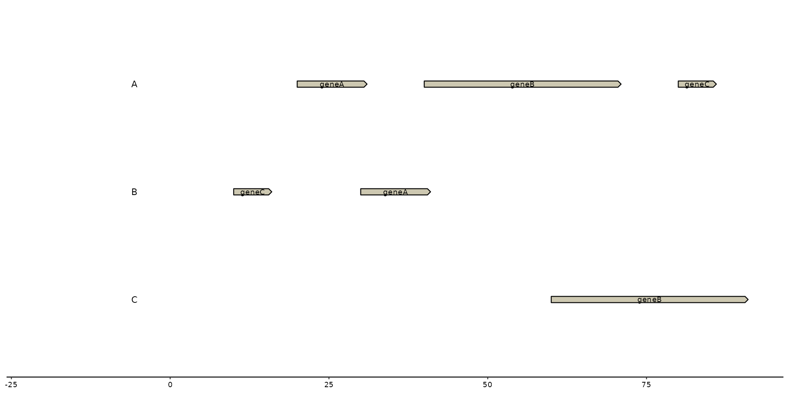
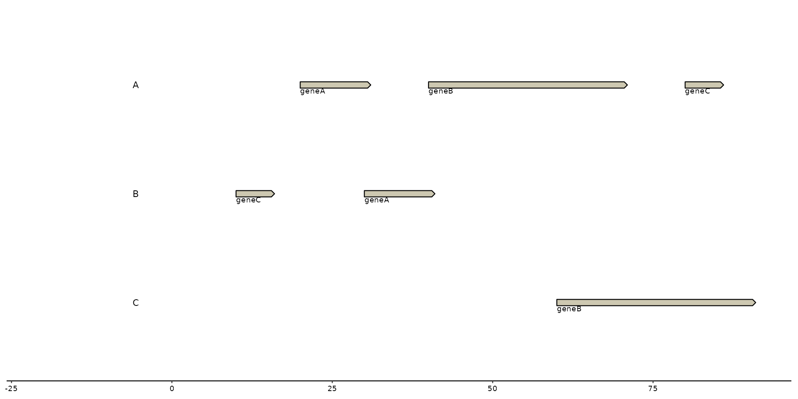
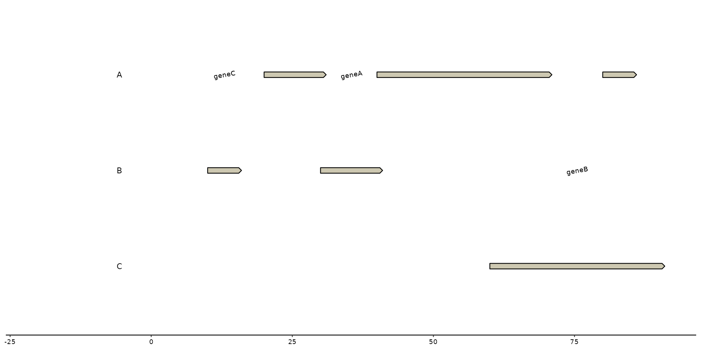

The functions below are useful for labeling features/genes in plots.
Users have to call on aes(label = ...) or (label = ...) to define label's text
Based on the function, the label will be placed at a specific location:
geom_..._text() will plot text in the middle of the feature.
geom_..._tag() will plot text on top of the feature, with a 45 degree angle.
geom_..._note() will plot text under the feature at the left side.
The ... can be either replaced with feat or gene depending on which
track the user wants to label.
With arguments such as hjust, vjust, angle, and nudge_y, the user
can also manually change the position of the text.
geom_feat_text(
mapping = NULL,
data = feats(),
stat = "identity",
position = "identity",
...,
parse = FALSE,
check_overlap = FALSE,
na.rm = FALSE,
show.legend = NA,
inherit.aes = TRUE
)
geom_feat_tag(
mapping = NULL,
data = feats(),
stat = "identity",
position = "identity",
hjust = 0,
vjust = 0,
angle = 45,
nudge_y = 0.03,
xjust = 0.5,
strandwise = TRUE,
...,
parse = FALSE,
check_overlap = FALSE,
na.rm = FALSE,
show.legend = NA,
inherit.aes = TRUE
)
geom_feat_note(
mapping = NULL,
data = feats(),
stat = "identity",
position = "identity",
hjust = 0,
vjust = 1,
nudge_y = -0.03,
xjust = 0,
strandwise = FALSE,
...,
parse = FALSE,
check_overlap = FALSE,
na.rm = FALSE,
show.legend = NA,
inherit.aes = TRUE
)
geom_gene_text(
mapping = NULL,
data = genes(),
stat = "identity",
position = "identity",
...,
parse = FALSE,
check_overlap = FALSE,
na.rm = FALSE,
show.legend = NA,
inherit.aes = TRUE
)
geom_gene_tag(
mapping = NULL,
data = genes(),
stat = "identity",
position = "identity",
hjust = 0,
vjust = 0,
angle = 45,
nudge_y = 0.03,
xjust = 0.5,
strandwise = TRUE,
...,
parse = FALSE,
check_overlap = FALSE,
na.rm = FALSE,
show.legend = NA,
inherit.aes = TRUE
)
geom_gene_note(
mapping = NULL,
data = genes(),
stat = "identity",
position = "identity",
hjust = 0,
vjust = 1,
nudge_y = -0.03,
xjust = 0,
strandwise = FALSE,
...,
parse = FALSE,
check_overlap = FALSE,
na.rm = FALSE,
show.legend = NA,
inherit.aes = TRUE
)Set of aesthetic mappings created by aes(). If specified and
inherit.aes = TRUE (the default), it is combined with the default mapping
at the top level of the plot. You must supply mapping if there is no plot
mapping.
The data to be displayed in this layer. There are three options:
If NULL, the default, the data is inherited from the plot
data as specified in the call to ggplot().
A data.frame, or other object, will override the plot
data. All objects will be fortified to produce a data frame. See
fortify() for which variables will be created.
A function will be called with a single argument,
the plot data. The return value must be a data.frame, and
will be used as the layer data. A function can be created
from a formula (e.g. ~ head(.x, 10)).
The statistical transformation to use on the data for this layer.
When using a geom_*() function to construct a layer, the stat
argument can be used the override the default coupling between geoms and
stats. The stat argument accepts the following:
A Stat ggproto subclass, for example StatCount.
A string naming the stat. To give the stat as a string, strip the
function name of the stat_ prefix. For example, to use stat_count(),
give the stat as "count".
For more information and other ways to specify the stat, see the layer stat documentation.
A position adjustment to use on the data for this layer.
Cannot be jointy specified with nudge_x or nudge_y. This
can be used in various ways, including to prevent overplotting and
improving the display. The position argument accepts the following:
The result of calling a position function, such as position_jitter().
A string nameing the position adjustment. To give the position as a
string, strip the function name of the position_ prefix. For example,
to use position_jitter(), give the position as "jitter".
For more information and other ways to specify the position, see the layer position documentation.
Other arguments passed on to layer()'s params argument. These
arguments broadly fall into one of 4 categories below. Notably, further
arguments to the position argument, or aesthetics that are required
can not be passed through .... Unknown arguments that are not part
of the 4 categories below are ignored.
Static aesthetics that are not mapped to a scale, but are at a fixed
value and apply to the layer as a whole. For example, colour = "red"
or linewidth = 3. The geom's documentation has an Aesthetics
section that lists the available options. The 'required' aesthetics
cannot be passed on to the params. Please note that while passing
unmapped aesthetics as vectors is technically possible, the order and
required length is not guaranteed to be parallel to the input data.
When constructing a layer using
a stat_*() function, the ... argument can be used to pass on
parameters to the geom part of the layer. An example of this is
stat_density(geom = "area", outline.type = "both"). The geom's
documentation lists which parameters it can accept.
Inversely, when constructing a layer using a
geom_*() function, the ... argument can be used to pass on parameters
to the stat part of the layer. An example of this is
geom_area(stat = "density", adjust = 0.5). The stat's documentation
lists which parameters it can accept.
The key_glyph argument of layer() may also be passed on through
.... This can be one of the functions described as
key glyphs, to change the display of the layer in the legend.
If TRUE, the labels will be parsed into expressions and
displayed as described in ?plotmath.
If TRUE, text that overlaps previous text in the
same layer will not be plotted. check_overlap happens at draw time and in
the order of the data. Therefore data should be arranged by the label
column before calling geom_text(). Note that this argument is not
supported by geom_label().
If FALSE, the default, missing values are removed with
a warning. If TRUE, missing values are silently removed.
logical. Should this layer be included in the legends?
NA, the default, includes if any aesthetics are mapped.
FALSE never includes, and TRUE always includes.
It can also be a named logical vector to finely select the aesthetics to
display.
If FALSE, overrides the default aesthetics,
rather than combining with them. This is most useful for helper functions
that define both data and aesthetics and shouldn't inherit behaviour from
the default plot specification, e.g. borders().
Moves the text horizontally
Moves the text vertically
Defines the angle in which the text will be placed. *Note
Moves the text vertically an entire contig/sequence.
(e.g. nudge_y = 1 places the text to the contig above)
Move text in x direction
plotting of feature tags
A ggplot2 layer with gene text.
A ggplot2 layer with feature tags.
A ggplot2 layer with feature notes.
A ggplot2 layer with gene text.
A ggplot2 layer with gene tags.
A ggplot2 layer with gene notes.
These labeling functions use ggplot2::geom_text() under the hood.
Any changes to the aesthetics of the text can be performed in a ggplot2 manner.
# example data
genes <- tibble::tibble(
seq_id = c("A", "A", "A", "B", "B", "C"),
start = c(20, 40, 80, 30, 10, 60),
end = c(30, 70, 85, 40, 15, 90),
feat_id = c("A1", "A2", "A3", "B1", "B2", "C1"),
type = c("CDS", "CDS", "CDS", "CDS", "CDS", "CDS"),
name = c("geneA", "geneB", "geneC", "geneA", "geneC", "geneB")
)
seqs <- tibble::tibble(
seq_id = c("A", "B", "C"),
start = c(0, 0, 0),
end = c(100, 100, 100),
length = c(100, 100, 100)
)
# basic plot creation
plot <- gggenomes(seqs = seqs, genes = genes) +
geom_bin_label() +
geom_gene()
# geom_..._text
plot + geom_gene_text(aes(label = name))

# geom_..._tag
plot + geom_gene_tag(aes(label = name))
# geom_..._note
plot + geom_gene_note(aes(label = name))

# with horizontal adjustment (`hjust`), vertical adjustment (`vjust`)
plot + geom_gene_text(aes(label = name), vjust = -2, hjust = 1)
# using `nudge_y` and and `angle` adjustment
plot + geom_gene_text(aes(label = name), nudge_y = 1, angle = 10)

# labeling with manual input
plot + geom_gene_text(label = c("This", "is", "an", "example", "test", "test"))